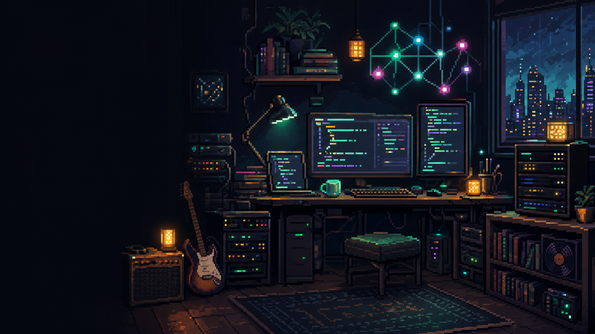

用 Go 给 AI 应用搭后端底座
从请求编排、流式响应到任务队列，整理 AI 应用背后的工程问题。
 Leo Merthon
Leo Merthon

RECENT NOTES
从请求编排、流式响应到任务队列，整理 AI 应用背后的工程问题。
把音乐、书和性格关键词放在一起，看它们如何影响写代码的人。
LIVE PANEL
> 正在整理 AI 笔记...
> 本地时间：--:--:--
> 系统状态：ONLINE